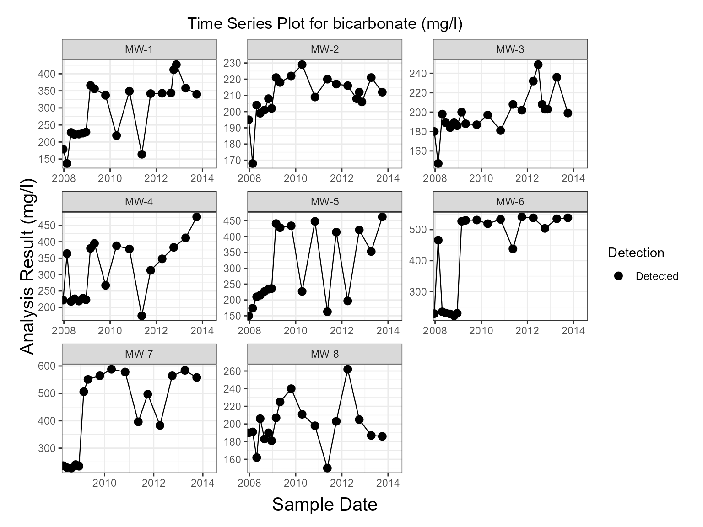
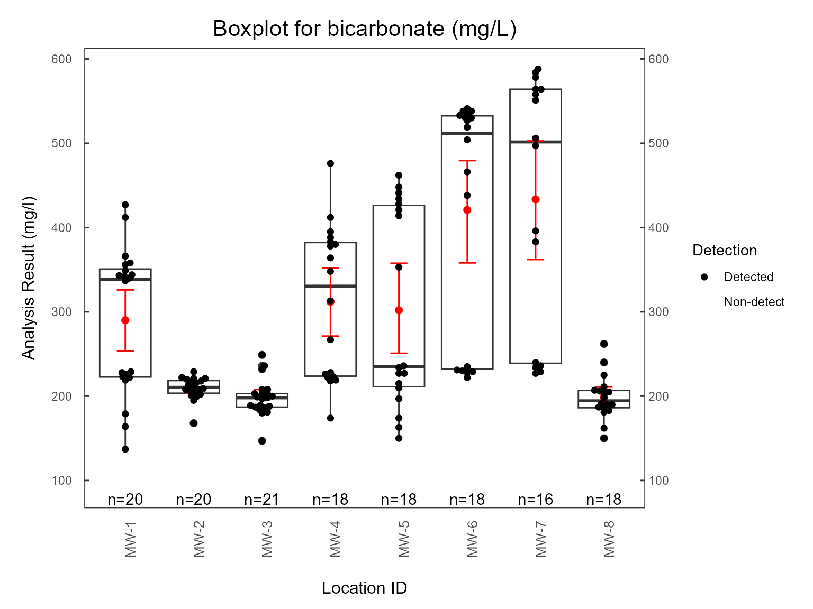
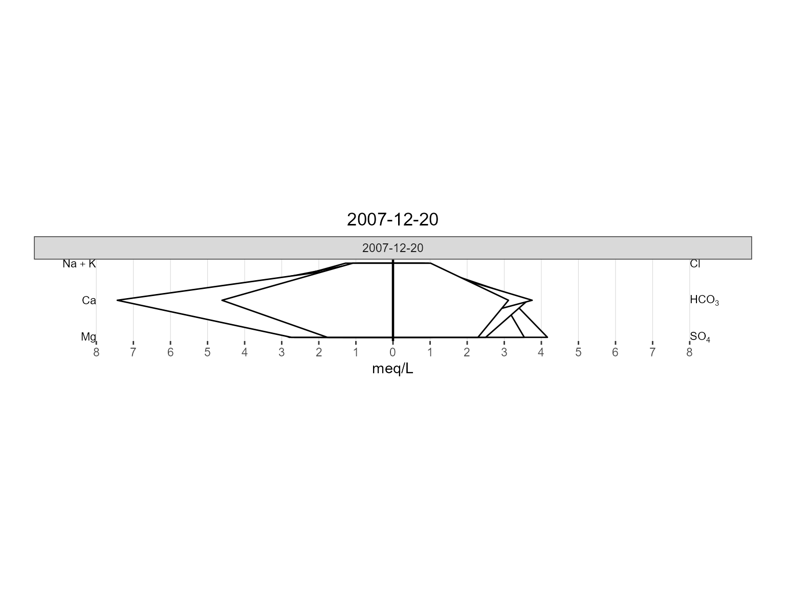
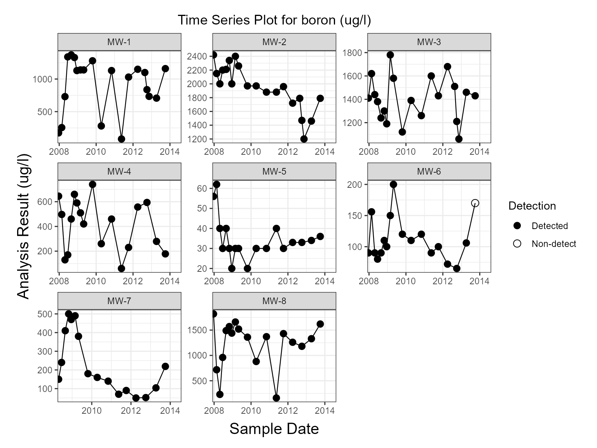
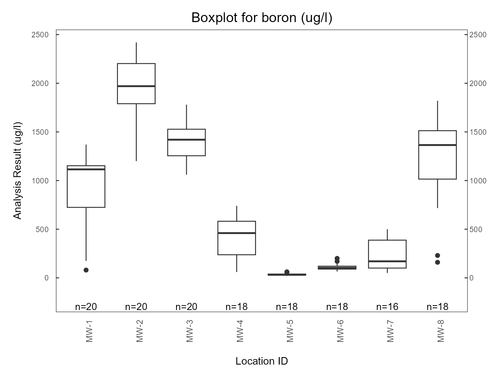

Environmental Plotting System
Package Development Team
2026-11-06
Source:vignettes/plotting.Rmd
plotting.RmdIntroduction
The plotting module provides a unified suite of visualization functions for environmental monitoring datasets.
All plotting functions support both raw data frames and
env_schema objects through S3 method dispatch. The system
is designed to operate independently of source column names by relying
on schema mappings and accessor functions.
Supported visualizations include:
- Time-series plots
- Boxplots
- Correlation plots
- Piper diagrams
- Schoeller diagrams
- Stiff diagrams
- Durov diagrams
- Spatial plots
- Geochemical animations
Design Philosophy
Schema-Aware Architecture
All environmental plotting functions ultimately operate on an
env_schema object.
When a raw data frame is supplied, it is first converted using user-provided column mappings.
For example:
series_plot(
groundwater_data,
location = well_id,
date = sample_date,
analyte = constituent,
result = concentration
)internally becomes:
env_schema(
groundwater_data,
location = well_id,
date = sample_date,
analyte = constituent,
result = concentration
)Internally, plotting methods interact with schema accessors rather than hard-coded column names:
location_var()
date_var()
analyte_var()
result_var()
unit_var()
reporting_flag_var()This architecture ensures plots remain portable across different environmental datasets.
Example Datasets
The package includes groundwater monitoring datasets that can be used to demonstrate plotting functionality.
Standardized Example Dataset
The gw dataset is an env_schema object and
can be used directly with plotting functions.
library(dplyr)
library(manager)
data(gw)
gw
#> <env_schema>
#> 5878 rows x 41 columns
#> Locations: 8
#> Analytes: 49
#> Valid: TRUE
#> Version: 0.5.0Because gw is already an env_schema, no
additional mapping is required.
plots <- series_plot(gw)
plots[[1]]
Raw Groundwater Dataset
The gw_data dataset contains environmental monitoring
data in tabular format.
data(gw_data)
glimpse(gw_data)
#> Rows: 5,878
#> Columns: 6
#> $ location_id <chr> "MW-2", "MW-2", "MW-2", "MW-2", "MW-2", "MW-2", "MW-2"…
#> $ sample_date <dttm> 2008-10-28, 2008-10-28, 2008-10-28, 2008-10-28, 2008-…
#> $ analysis_result <dbl> 36.300, 18.900, 0.500, 24.900, 170.000, 0.290, 1.900, …
#> $ lt_measure <chr> NA, NA, NA, NA, NA, NA, NA, NA, "<", NA, "<", "<", NA,…
#> $ default_unit <chr> "mg/L", "mg/L", "mg/L", "mg/L", "mg/L", "mg/L", "ug/L"…
#> $ param_name <chr> "Magnesium, dissolved", "Sodium, dissolved", "Potassiu…Create a smaller subset for examples.
Creating an env_schema Object
Raw datasets can be converted into an env_schema
object.
gw_schema <- env_schema(
gw_subset,
location = location_id,
date = sample_date,
analyte = param_name,
result = analysis_result,
unit = default_unit,
reporting_flag = lt_measure
)
gw_schema
#> <env_schema>
#> 2372 rows x 41 columns
#> Locations: 3
#> Analytes: 49
#> Valid: TRUE
#> Version: 0.5.0Time Series Plots

Mann-Kendall Trend
plots <- series_plot(
gw,
trend = "mann_kendall",
trend_label = "compact"
)
plots[[1]]Boxplots
Bootstrap Confidence Intervals
plots <- boxplot(
gw,
show_points = TRUE,
plot_ci = TRUE
)
plots[[1]]
Piper Diagrams


Scale Point Size by TDS
piper_plot(
gw,
scale_analyte = "Total Dissolved Solids"
)Group by Category
piper_plot(
gw,
group_col = "aquifer_unit"
)Piper Animations
Create an interactive animation:
piper_time_plot(gw)Export animation:
piper_time_html(gw)
Stiff Diagrams
Scale Fill by TDS
plots <- stiff_plot(
gw,
scale_analyte = "Total Dissolved Solids"
)
plots[[1]]Group by Sampling Date
plots <- stiff_plot(
gw,
group_var = "sample_date"
)
plots[[1]]
Add Reference Lines
plots <- stiff_plot(
gw,
lines = TRUE
)
plots[[1]]

Regulatory Standards
Several plotting functions support standards overlays.
Time-series example:
plots <- series_plot(
gw,
standards = TRUE
)
plots[[1]]
Boxplot example:
plots <- boxplot(
gw,
standards = TRUE
)
plots[[1]]
Animation Framework
The package includes shared animation helpers for geochemical plotting.
Animated workflows:
All animation utilities automatically determine the mapped date field from the schema metadata.
Extending the Plotting Framework
New visualization functions should follow the same S3 design pattern used throughout the package.
data.frame Method
my_plot.data.frame <- function(
df,
location,
date,
analyte,
result,
...
) {
df <- env_schema(
df,
location = {{ location }},
date = {{ date }},
analyte = {{ analyte }},
result = {{ result }}
)
my_plot(df, ...)
}env_schema Method
my_plot.env_schema <- function(
df,
...
) {
location_col <- location_var(df)
date_col <- date_var(df)
analyte_col <- analyte_var(df)
result_col <- result_var(df)
...
}Following this pattern ensures all future visualizations remain independent of source column names while remaining fully compatible with the package schema system.
Summary
The environmental plotting framework provides:
- Schema-aware plotting
- Support for raw data frames and
env_schemaobjects - Consistent handling of analytical metadata
- Hydrochemical interpretation tools
- Animation support
- Extensible S3-based architecture
By leveraging schema accessors rather than hard-coded field names, plots remain portable, reusable, and robust across diverse environmental datasets.
Session Information
sessionInfo()
#> R version 4.6.1 (2026-06-24 ucrt)
#> Platform: x86_64-w64-mingw32/x64
#> Running under: Windows 11 x64 (build 26100)
#>
#> Matrix products: default
#> LAPACK version 3.12.1
#>
#> locale:
#> [1] LC_COLLATE=English_United States.utf8
#> [2] LC_CTYPE=English_United States.utf8
#> [3] LC_MONETARY=English_United States.utf8
#> [4] LC_NUMERIC=C
#> [5] LC_TIME=English_United States.utf8
#>
#> time zone: America/New_York
#> tzcode source: internal
#>
#> attached base packages:
#> [1] stats graphics grDevices utils datasets methods base
#>
#> other attached packages:
#> [1] manager_0.5.0.9000 dplyr_1.2.1
#>
#> loaded via a namespace (and not attached):
#> [1] gtable_0.3.6 beeswarm_0.4.0 xfun_0.62 bslib_0.12.0
#> [5] ggplot2_4.0.3 htmlwidgets_1.6.4 vctrs_0.7.3 tools_4.6.1
#> [9] generics_0.1.4 tibble_3.3.1 cluster_2.1.8.2 pkgconfig_2.0.3
#> [13] data.table_1.18.99 checkmate_2.3.4 RColorBrewer_1.1-3 S7_0.2.2
#> [17] desc_1.4.3 lifecycle_1.0.5 compiler_4.6.1 farver_2.1.2
#> [21] stringr_1.6.0 textshaping_1.0.5 vipor_0.4.7 htmltools_0.5.9
#> [25] sass_0.4.10 yaml_2.3.12 htmlTable_2.5.0 Formula_1.2-6
#> [29] pillar_1.11.1 pkgdown_2.2.1 jquerylib_0.1.4 cachem_1.1.0
#> [33] viridis_0.6.5 Hmisc_5.3-0 rpart_4.1.27 tidyselect_1.2.1
#> [37] digest_0.6.39 stringi_1.8.9 purrr_1.2.2 labeling_0.4.3
#> [41] cowplot_1.2.0 fastmap_1.2.0 grid_4.6.1 colorspace_2.1-4
#> [45] cli_3.6.6 magrittr_2.0.5 base64enc_0.1-6 foreign_0.8-91
#> [49] withr_3.0.3 scales_1.4.0 backports_1.5.1 ggbeeswarm_0.7.3
#> [53] rmarkdown_2.32 otel_0.2.0 nnet_7.3-20 gridExtra_2.3.1
#> [57] ragg_1.5.2 evaluate_1.0.5 knitr_1.52 EnvStats_3.1.0
#> [61] viridisLite_0.4.3 rlang_1.3.0 Rcpp_1.1.2 glue_1.8.1
#> [65] rstudioapi_0.19.0 jsonlite_2.0.0 R6_2.6.1 systemfonts_1.3.2
#> [69] fs_2.1.0 units_1.0-1.6